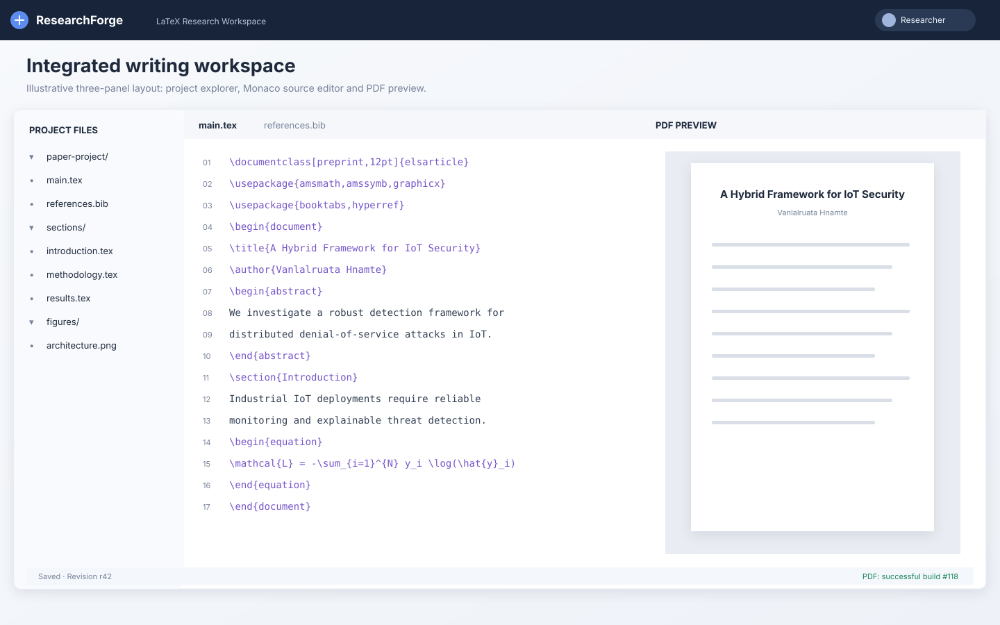
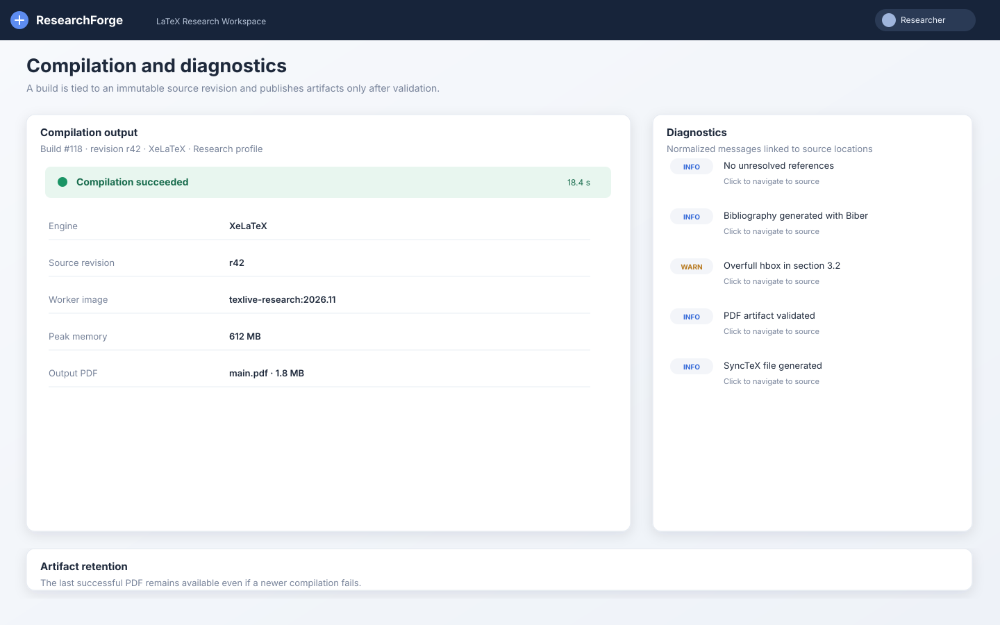
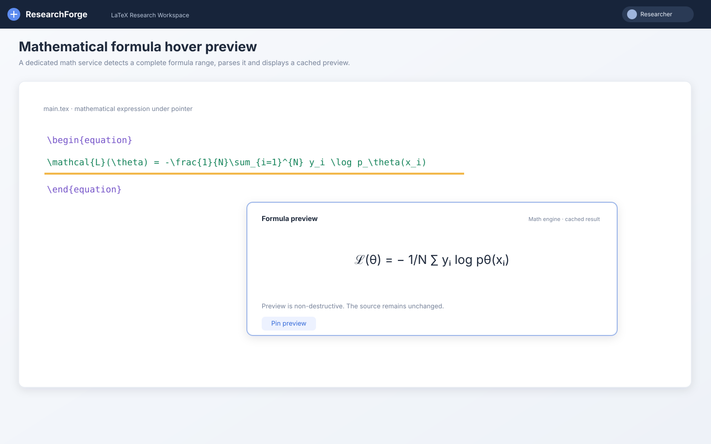
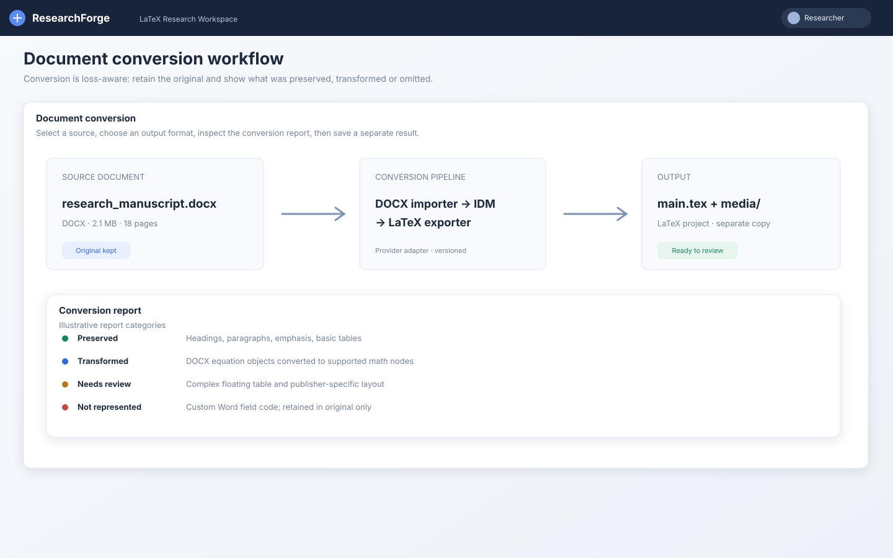
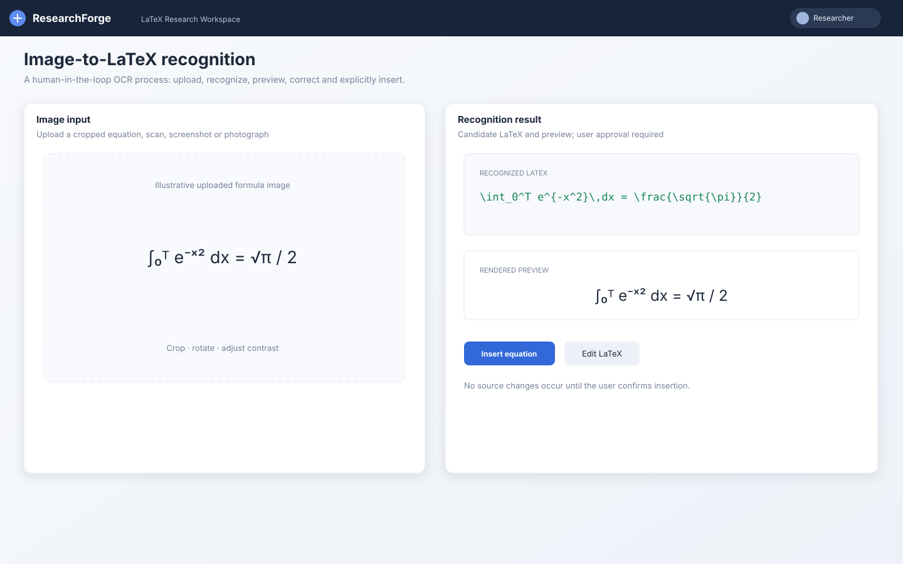

1. Product vision and implementation principles
This guide defines a staged route to an independently engineered, self-hosted, browser-based LaTeX research-writing platform. The application, workflows, project model, orchestration, editor intelligence, diagnostics, math/document models and conversion framework should be first-party code.
Important boundary: an independent application does not require implementing a complete TeX-compatible typesetting engine before the first release. Use a secure, replaceable TeX Live compatibility backend for real manuscript compilation while progressively building the platform's own LaTeX analysis, math, document and orchestration engines. A full TeX engine is a separate long-term research programme.
2. Technology baseline
| Layer | Baseline | Role |
|---|---|---|
| Backend | Laravel 13 / PHP | Identity, projects, policies, APIs, orchestration and administration. |
| Frontend | Inertia.js 3, Vue 3.5, TypeScript, Tailwind CSS 4.1 | Workspace UI, editor/viewer integration and client-side services. |
| Editor | Monaco Editor | Source editing and custom LaTeX providers. |
| PDF viewer | PDF.js | Rendering, search, zoom and navigation. |
| Data/queue | MySQL + Redis | Metadata, jobs, locks, cache and throttling. |
| Realtime | Laravel Reverb | Build status and later collaboration events. |
| Workers | Docker on Ubuntu | Isolated compilation, conversion and OCR. |
| Compiler | TeX Live; optional Tectonic adapter | Compatibility backend during independent engine development. |
| Conversion | First-party framework; optional Pandoc adapter | DOCX, LaTeX, Markdown, HTML, EPUB and ODT. |
Use PHP for application logic and orchestration; TypeScript for browser editor services, parsers and math AST; Python only if required by OCR model ecosystems. Consider Rust/C++ only for measured bottlenecks.
3. System architecture
Separate the product into presentation, control, execution and engine planes. Never compile LaTeX inside an HTTP request or directly from a Laravel controller.
Trust boundaries
- All uploaded projects are untrusted.
- Workers receive immutable snapshots, not live project directories.
- Workers receive no application secrets or Docker socket.
- Artifacts are private and served only after authorization.
- Jobs have strict time, memory, CPU, process and disk limits.
4. First-party engines and replaceable adapters
| Engine | First-party responsibility | Initial boundary |
|---|---|---|
| Platform/orchestration | Snapshots, scheduling, build state machine, logs, diagnostics and artifact publishing. | Build first; no need to implement TeX. |
| LaTeX language | Lexer, source-preserving syntax tree, command/environment registry, symbols and diagnostics. | Editor-analysis subset, not full TeX interpreter. |
| Mathematics | Math lexer/parser, AST, validation and renderer interface. | Common constructs first; renderer can initially be an adapter. |
| Document model | Structured academic model and loss-aware import/export pipeline. | Common structures; preserve unknown TeX as raw nodes. |
| Dependency analysis | Index inputs, images, classes, packages and bibliography resources. | Static analysis, not complete CTAN resolver. |
| Typesetting | Long-term TeX-compatible layout, font, box/glue, page and PDF engine. | Research only; not an MVP dependency. |
LaTeX is a macro language with catcodes, expansion, conditionals and package-defined syntax. A parser that highlights source and finds labels must not be described as a complete TeX interpreter.
5. Workspace and editor design
The desktop workspace uses three resizable regions: left project explorer, centre source editor and right PDF preview. On narrow screens, use stacked or tabbed panels.

- Project tree, folders, upload/download, rename, move and delete.
- Monaco tabs, dirty state, acknowledged autosave, snippets, search and folding.
- LaTeX highlighting for .tex, .bib, .cls, .sty and related files.
- Project-aware completion for citations, labels, references, macros and file paths.
- Diagnostics with severity, source range and click-to-navigate.
- PDF preview with thumbnails, zoom, page navigation, search and download.
6. Compilation pipeline and PDF lifecycle

Each build is bound to an immutable source revision and a pinned worker image. Recommended lifecycle:
Use latexmk for multi-pass runs. Support pdfLaTeX, XeLaTeX and LuaLaTeX after testing. Add BibTeX/Biber, MakeIndex and MakeGlossaries through explicit worker capabilities.
Validate output existence, non-zero size, PDF structure and artifact storage before publishing success. Retain logs, diagnostics, compiler version, source revision, image digest, duration and resource metrics.
7. Formula hover and mathematical engine

Build math support separately from the general LaTeX parser. Start with math-region detection and a parser for groups, scripts, fractions, roots, matrices, delimiters, accents, operators and AMS environments.
- Detect the complete formula range under the pointer.
- Cache by source hash and renderer version.
- Debounce hover work and never block typing.
- Handle malformed expressions gracefully.
- Allow pinning or disabling previews.
- Never change source text during preview.
Initial environments: inline/display math, equation/equation*, align/align*, gather, multline, split, cases and matrix families. The first renderer can be a replaceable adapter; develop an independent renderer for a defined subset only after visual regression tests exist.
8. Document conversion architecture

Define a platform-owned intermediate document model (IDM) for metadata, headings, paragraphs, citations, references, equations, figures, tables, algorithms, footnotes and appendices. Use import → IDM → export, with a report that records preserved, transformed, unsupported and omitted content.
Target DOCX ↔ LaTeX, Markdown ↔ LaTeX, then HTML, EPUB and ODT. Conversion is best-effort unless the exact format pair passes a round-trip test. Complex publisher classes, custom macros, floats, tracked changes and advanced tables may not convert exactly. Always retain the original and write output separately.
9. Image-to-LaTeX recognition

- Upload or crop a formula image.
- Validate type, size, dimensions and ownership.
- Preprocess rotation, contrast and crop.
- Run an OCR provider and return candidate LaTeX.
- Show confidence metadata where available and render a preview.
- Let the user edit and approve.
- Insert as inline, display or numbered equation only after confirmation.
Benchmark CPU inference on the actual VPS. A Python service may be justified by model availability, but it must be isolated and replaceable. Do not silently overwrite source or transmit entire projects when only a cropped formula is needed.
10. Tier-wise product roadmap
Tier 0 — Engineering foundation
Repository conventions, CI, auth skeleton, MySQL/Redis, Docker worker proof, Monaco/PDF.js prototypes, real manuscript compilation and VPS benchmarks.
Exit: multi-file project compiles securely and PDF is displayed.Tier 1 — Core authoring platform
Dashboard, project/file CRUD, Monaco, autosave, revisions, manual compile, logs, PDF.js, three TeX engines, ZIP import/export and sandbox quotas.
Exit: create/import, edit, compile, inspect diagnostics and download reliably.Tier 2 — Research-grade environment
Project-aware completion, LaTeX parser v1, math hover, bibliography workflows, SyncTeX, build history, common packages and publisher templates.
Exit: representative research manuscripts pass the compatibility corpus.Tier 3 — Conversion and AI assistance
IDM v1, DOCX/Markdown conversion reports, OCR review workflow, formula AST improvements and optional AI provider abstraction.
Exit: conversion limitations are transparent and OCR requires approval.Tier 4 — Collaboration and advanced authoring
Realtime collaboration, comments, review threads, Git/branching, organization administration and structured visual editing.
Exit: concurrency, authorization and audit tests pass.Tier 5 — Independent engine research
First-party math renderer subset, richer LaTeX analysis, document exporters, deterministic dependency resolution and typesetting research.
Exit: each engine has scope, regression tests, benchmarks and a compatibility matrix.11. Phase-wise implementation roadmap
| Phase | Focus | Deliverables | Gate |
|---|---|---|---|
| P0 | Discovery/specification | Requirements, use cases, threat model, licence register, test corpus and risk register. | Approved spec |
| P1 | Feasibility prototypes | Monaco, PDF.js, Docker TeX Live, bibliography, SyncTeX, conversion and OCR benchmarks. | Feasibility report |
| P2 | Application foundation | Laravel structure, auth, project-scoped policies, organizations, storage, queues, audit and CI. | Secure skeleton |
| P3 | Workspace | Dashboard, projects, file tree, tabs, Monaco, autosave and revision snapshots. | Editing workflow |
| P4 | Compilation v1 | Snapshots, worker protocol, TeX Live, latexmk, logs and artifact lifecycle. | Reproducible builds |
| P5 | PDF and diagnostics | PDF.js, build status, error parser, stale state and last-successful PDF. | End-to-end loop |
| P6 | Language/math v1 | Lexer, source spans, parser subset, completion, references and formula hover. | Editor intelligence |
| P7 | Research workflows | BibTeX/Biber, index/glossary, TikZ/PGFPlots, templates and SyncTeX. | Corpus pass |
| P8 | Conversion/OCR | IDM, DOCX/Markdown adapters, reports and OCR approval workflow. | Conversion/OCR QA |
| P9 | Collaboration | Realtime, comments, roles, audit and Git/branch strategy. | Concurrency/security pass |
| P10 | Independent engines | Math renderer subset, richer analysis, IDM exporters and typesetting research. | Evidence-based gate |
Phase 0 — Discovery and specification
- Define personas: researcher, student, supervisor, group and administrator.
- Build requirements traceability matrix and acceptance criteria.
- Research public products for feature expectations; do not copy code by default.
- Collect real and synthetic test projects.
- Record VPS CPU, RAM, disk, concurrency and backup expectations.
Phase 1 — Feasibility prototypes
- Monaco in Vue with custom LaTeX language definition.
- PDF.js viewer.
- Dockerized TeX Live compiling a multi-file publisher-style project.
- latexmk plus BibTeX/Biber and cross-references.
- SyncTeX forward/inverse navigation.
- DOCX ↔ LaTeX conversion quality test.
- CPU OCR latency/memory benchmark.
- Concurrent build, disk and peak-memory benchmark.
Phase 2 — Foundation
Implement identity, optional MFA, organization and project membership, project-scoped policies, private storage, queues, audit events, CI, static analysis and deployment.
Phase 3 — Workspace
Implement file operations, tabs, Monaco, dirty state, acknowledged autosave and immutable source revisions. A build may only compile a committed snapshot.
Phase 4–5 — Compilation and PDF
Implement worker protocol, state machine, quotas, artifacts, diagnostics and PDF viewer. Failed builds preserve the previous successful PDF.
Phase 6–7 — Language and research support
Add deterministic parser diagnostics, project index, completion, bibliography, indexes/glossaries, template validation and manuscript corpus.
Phase 8–10 — Conversion, OCR, collaboration and independent engines
Introduce these only after source persistence and compilation are dependable. Treat each independent engine as a separate tested programme.
12. Data model, APIs and events
Core entities: User, Organization, OrganizationMember, Project, ProjectMember, ProjectFile, ProjectRevision, Compilation, BuildArtifact, Diagnostic, ConversionJob, OcrJob, Template, Comment/ReviewThread, AuditEvent and UsageRecord.
Keep file contents in private storage rather than database blobs. Store checksums, logical paths, storage keys, sizes and revision manifests. Every file, build, conversion and artifact endpoint must check project membership.
Suggested API groups: /api/v1/projects, /api/v1/projects/{project}/files, /api/v1/projects/{project}/revisions, /api/v1/projects/{project}/compilations, /api/v1/compilations/{id}, /api/v1/projects/{project}/conversions, and /api/v1/projects/{project}/ocr-jobs.
Realtime events: CompilationQueued, CompilationStarted, CompilationProgress, CompilationCompleted, CompilationFailed, ProjectFileUpdated, ConversionCompleted and OcrRecognitionCompleted. Authorize every private channel.
13. Security, reliability and operations
- Run workers non-root; no Docker socket, app secrets or unrestricted network.
- Disable unrestricted shell escape; external execution requires separately reviewed capability.
- Use read-only base images and per-build writable workspaces.
- Enforce CPU, memory, process, wall-time, disk, file-count and output limits at container boundary.
- Validate ZIP extraction against traversal, symlink and archive-bomb attacks.
- Use Laravel policies on every project and artifact operation; an unguessable ID is not authorization.
- Back up MySQL and artifacts off-server; perform restore drills.
- Use bounded retries, idempotent jobs, dead-letter handling, health checks and orphan cleanup.
- Keep manuscript contents private; disclose external AI/OCR data transfer.
Operational profiles may include Personal, Researcher, Group and Institution. Set quotas only after benchmarking the target VPS.
14. Testing and release gates
- Unit tests: parser, AST, path validation, state transitions, diagnostics and conversion mapping.
- Feature tests: authorization, project/file operations, revisions and build requests.
- Integration tests: Redis, worker protocol, storage and realtime events.
- Compiler corpus: articles, thesis, Beamer, BibTeX/Biber, TikZ/PGFPlots, Unicode, glossaries and supplementary files.
- Browser E2E: edit → save → compile → view PDF; include failed build and recovery.
- Security tests: path traversal, archive bombs, symlinks, shell escape, IDOR and resource exhaustion.
- Load tests: concurrent autosaves, queue depth and parallel builds.
- Visual tests: math rendering and workspace layout.
A phase is complete only when acceptance criteria, automated tests, security review, failure/recovery tests and documentation are complete. UI polish alone is not a release gate.
15. Master development prompt for an AI coding agent
Use this prompt after reviewing and approving the architecture. It directs the coding agent to work in bounded, reviewable slices.
ROLE Act as a principal software architect, senior Laravel/PHP engineer, senior Vue/TypeScript engineer, compiler-systems engineer and application-security engineer. OBJECTIVE Design and implement an independent self-hosted browser-based LaTeX research-writing platform. Do not fork or clone Overleaf or another complete editor. Build first-party project workflows, authorization, orchestration, diagnostics, editor intelligence, LaTeX analysis, math/document models and conversion workflows. FIXED STACK Laravel 13/PHP; Inertia.js 3; Vue 3.5; TypeScript; Tailwind CSS 4.1; MySQL; Redis; Laravel Reverb when needed; Monaco Editor; PDF.js; Docker-isolated workers on Ubuntu. Respect exact versions in lockfiles. OWNERSHIP AND ADAPTERS Own the application, project/file/revision model, build orchestration, diagnostics, editor providers, LaTeX lexer/parser, math AST, document intermediate model and conversion workflow. Keep compiler, conversion, OCR, storage and renderer behind replaceable interfaces. TeX Live is initially a compatibility backend. Pandoc and OCR models are optional adapters. Do not claim a custom parser compiles arbitrary LaTeX. A full TeX-compatible engine is long-term research. ARCHITECTURE Separate presentation, Laravel control plane, isolated execution plane and first-party engine plane. Never compile in an HTTP request. Compile immutable snapshots. Every build is tied to a source revision and pinned worker image. A failed build must never replace the last successful PDF. SECURITY Treat uploaded source as untrusted. Run workers non-root, with no app secrets, no Docker socket, network disabled by default, unrestricted shell escape disabled, and strict CPU/memory/process/time/disk/file/output quotas. Validate archives, paths and symlinks. Authorize every project/file/build/conversion/artifact endpoint. Prevent IDOR. Keep artifacts private. RELEASE ORDER R1: authentication, projects/files, Monaco, autosave, revisions, TeX Live workers, latexmk, build logs, PDF.js, private artifacts. R2: LaTeX parser subset, project-aware completion, diagnostics, math hover, bibliography, common workflows, SyncTeX. R3: document model, DOCX/LaTeX/Markdown conversion reports, image-to-LaTeX OCR with explicit user approval. R4: collaboration, comments, Git/branching, visual editor. Research: first-party math renderer, richer LaTeX analysis, exporters and typesetting prototype. IMPLEMENTATION RULES 1. Do not generate the entire codebase in one response or commit. 2. Inspect repository and installed dependency versions first. 3. Before each phase, list files/modules, migrations, APIs, security implications and acceptance tests. 4. Implement one bounded vertical slice at a time. 5. Use typed DTOs, enums, policies, form requests and clear domain boundaries. 6. Keep controllers thin; avoid giant services and duplicated logic. 7. Make jobs idempotent; define retries, timeouts, cancellation and failure states. 8. Add automated positive, negative and authorization tests with each feature. 9. Do not invent dependency APIs; inspect installed version and documentation. 10. Explain each new dependency's purpose, licence, maintenance and alternatives. 11. Do not copy code from research repositories without a separate licence review. 12. Preserve originals during conversion and OCR; never silently overwrite source. 13. Do not expose filesystem paths, secrets or private artifact identifiers. 14. Provide runnable code for each approved slice, not pseudocode presented as production code. 15. Update architecture, deployment instructions, environment examples and tests. FIRST TASK — NO CODING YET Produce a requirements traceability matrix, component/service boundary diagram, untrusted-compilation threat model, initial ER model, compiler-worker protocol, Phase 0/1 feasibility checklist, unresolved decisions and acceptance criteria for the first end-to-end milestone. Then wait for approval. The first proof must compile a representative multi-file academic manuscript in a resource-limited Docker worker and display the successful PDF in the browser.
16. Research references and governance
Potential references for feature discovery include Overleaf Community Edition/Toolkit, Aldine, ColTex, TeXlyre, Fidus Writer, SwiftLaTeX, CoCalc, TeXstudio, LyX, TeXmacs, LaTeX Workshop, TexLab, Monaco, PDF.js, KaTeX, MathJax, Pandoc, Tectonic and relevant OCR projects.
These are not an approved dependency list. Verify repository ownership, maintenance, exact commit/tag, licence, package provenance and operational fit before adoption. Maintain a licence register. Do not copy source or assets simply because a repository is public. Obtain legal review for distribution and copyleft obligations.
17. Immediate next actions and first-release definition
- Approve or amend this architecture baseline.
- Record actual VPS CPU, RAM, disk and expected concurrency.
- Choose a test corpus: simple article, publisher manuscript, thesis, bibliography-heavy paper and TikZ/PGFPlots project.
- Complete Phase 1 prototypes and benchmark report.
- Freeze first-release scope and acceptance criteria.
- Start Laravel implementation only after compilation and storage architecture are validated.
First public release is successful when: users can securely create/import projects, edit and autosave, compile common multi-file academic manuscripts, use bibliography and references in the tested corpus, view the latest successful PDF, inspect diagnostics, retain the last successful PDF after failure, and rely on isolated workers with enforced quotas and tested backups.